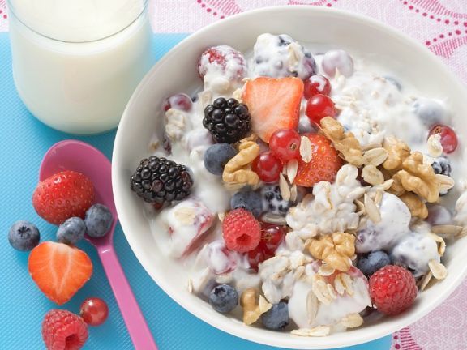

Muesli with berries

Description
Buttermilk and quark have a lot of protein in them - this keeps you full and strengthens your muscles. In addition, dairy products provide a lot of the bone-strengthening calcium. Berries protect cells from free radicals with their antioxidants.
Ingredients
- 160g lowfat quark
- 500ml buttermilk
- 1 tbsp apple syrup
- 160g oat flakes
- 500g mixed berries (raspberries, blackberries, blueberries, strawberries)
- 30g walnut kernels
- 10g sunflower seeds
Preparation
- Mix low-fat quark with buttermilk and apple syrup until smooth
- Stir in the oatmeal and let it swell for about 5 minutes
- In the meantime, wash the berries and pat dry
- Clean and halve or quarter the strawberries
- Roughly chop the walnuts and mix with the sunflower seeds
- Mix the berries, except for a few for garnish, with the quark and distribute on cereal bowls
- Scatter the remaining berries on top along with the seeds
Nutritional value
1 Serving contains (proportion of the daily requirement in percent)
- Calories 337 kcal (16%)
- Protein 18 g (18%)
- Fat 10 g (9%)
- Carbohydrates 41 g (27%)
- Added sugar 3 g (12%)
- Fiber 6.9 g (23%)
Sources
Müsli mit Beeren (original in german)